Introducción
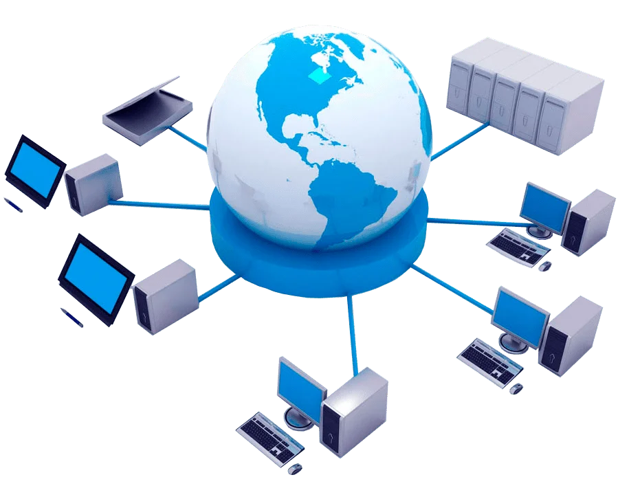
Una red informática permite conectar dispositivos para compartir información, recursos e internet de forma rápida y eficiente.
Modelo OSI
Física
Transmite señales eléctricas o digitales a través del medio físico.
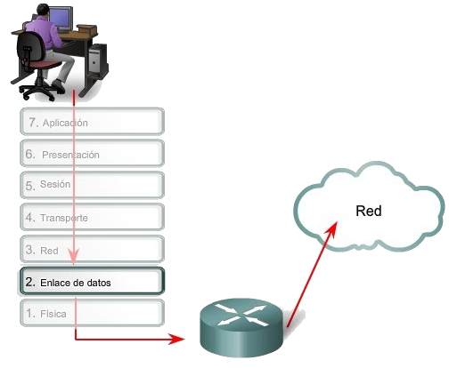
Enlace
Controla errores y asegura la correcta transmisión de datos.
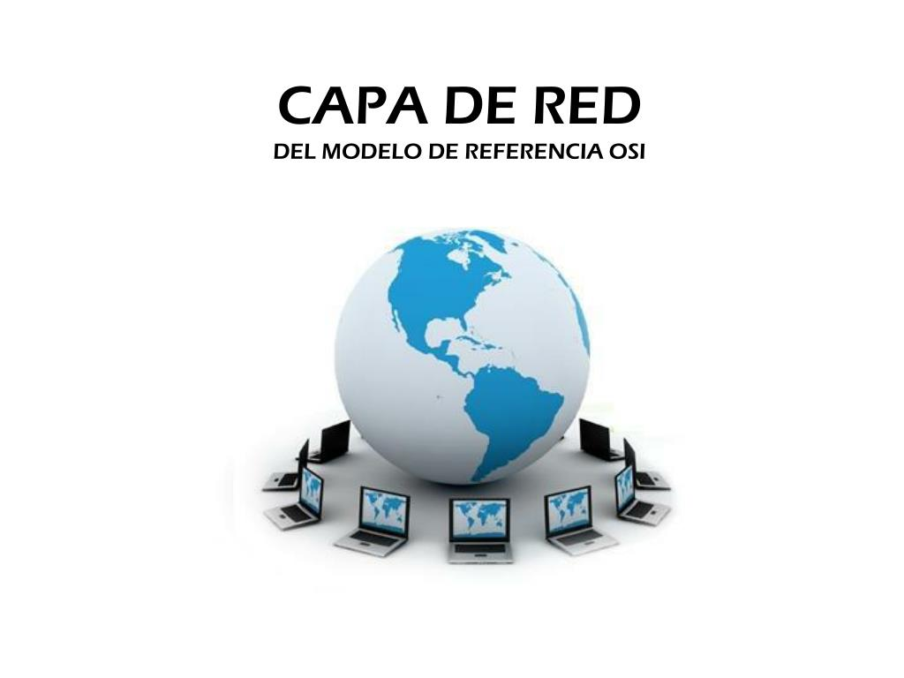
">Red
Se encarga del direccionamiento y envío de paquetes.
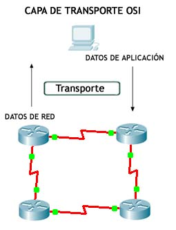
Transporte
Garantiza que los datos lleguen completos y ordenados.
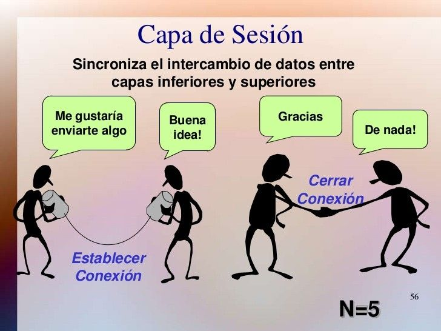
Sesión
Establece y mantiene la conexión entre dispositivos.
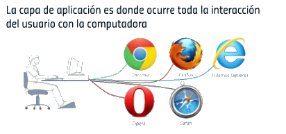
Aplicación
Permite la interacción directa con el usuario final.
Modelo TCP/IP
Acceso
Controla el acceso al medio físico de la red.
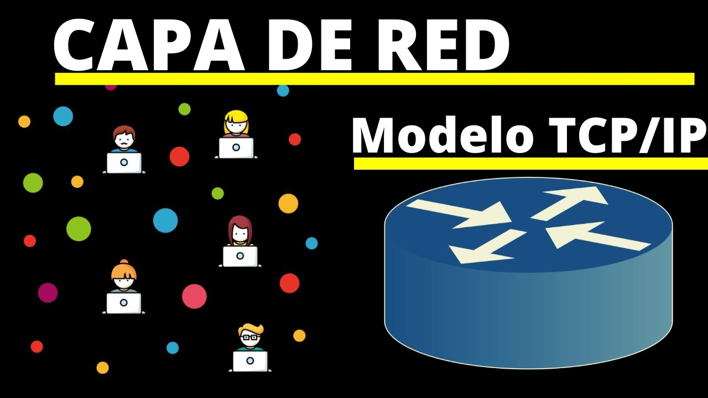
Internet
Permite el direccionamiento y enrutamiento de datos.
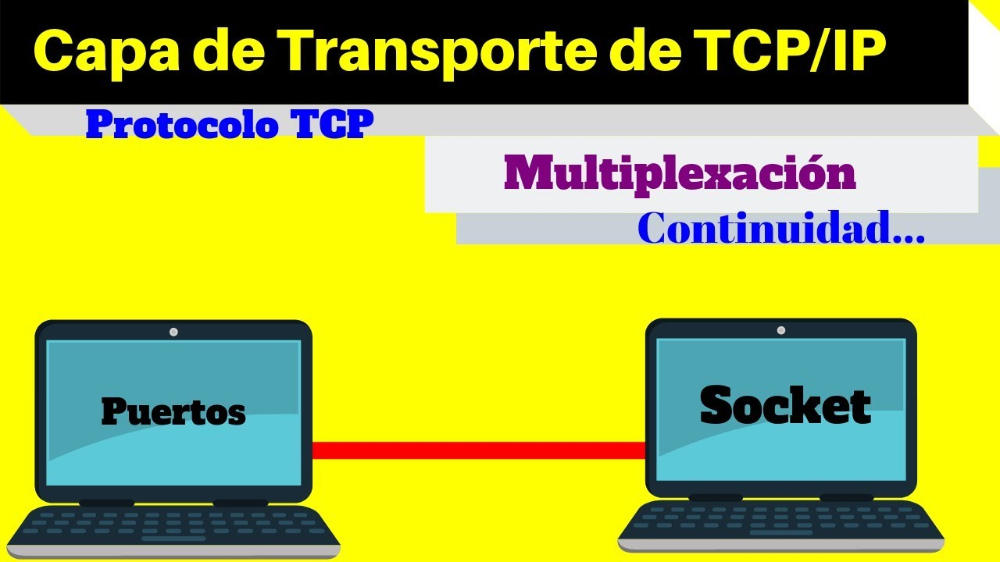
Transporte
Gestiona el envío seguro de datos.
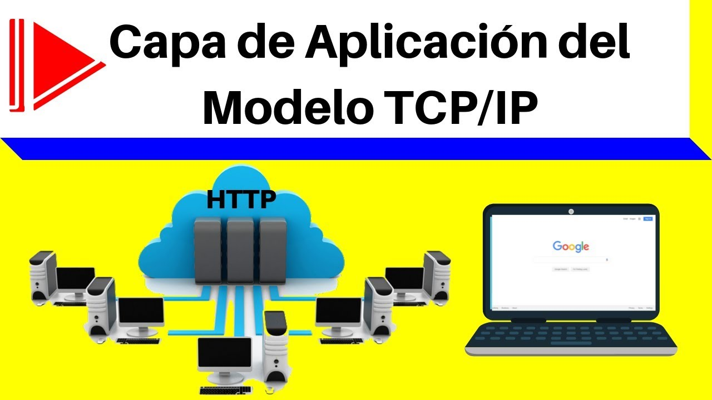
Aplicación
Brinda servicios como web, correo y archivos.
Protocolos
HTTP
Permite la visualización de páginas web en navegadores.
HTTPS
Protege la información mediante cifrado seguro.
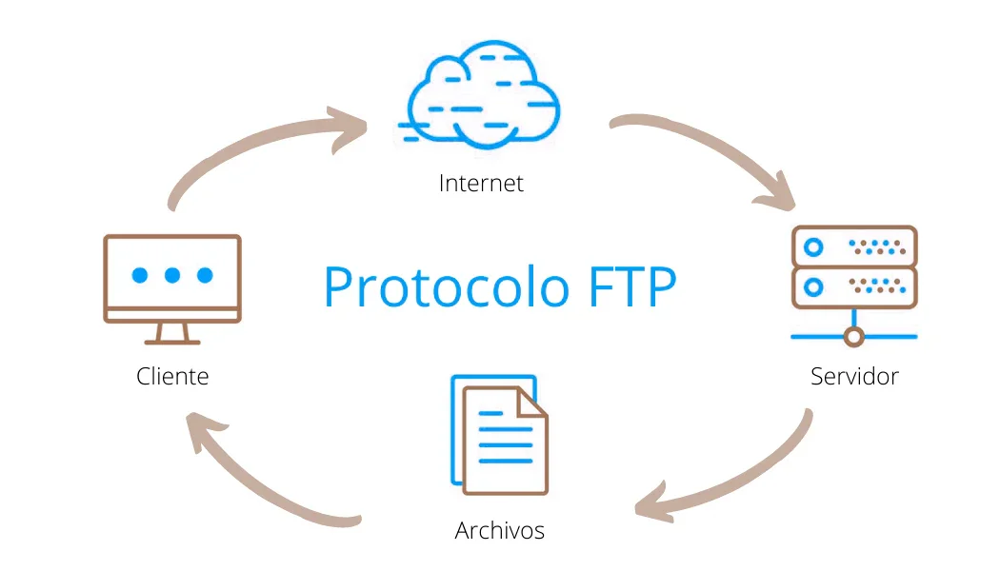
FTP
Facilita la transferencia de archivos entre sistemas.
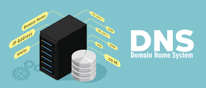
DNS
Convierte nombres web en direcciones IP.
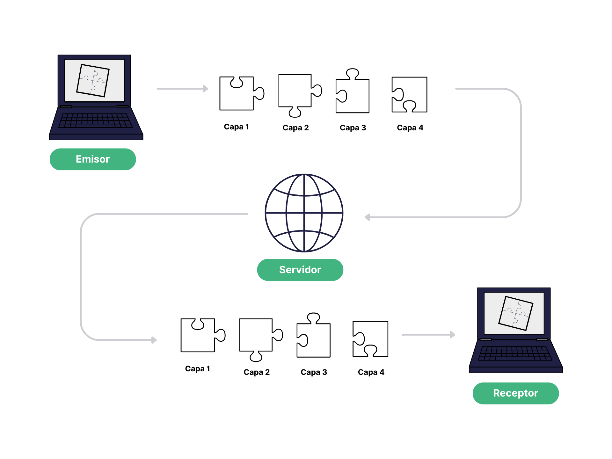
TCP/IP
Permite la comunicación entre dispositivos en internet.
Topologías
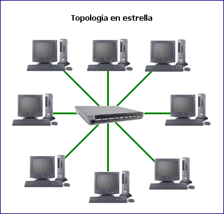
Estrella
Todos los dispositivos se conectan a un punto central.
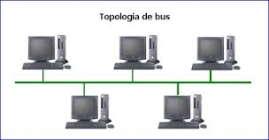
Bus
Todos comparten un mismo canal de comunicación.
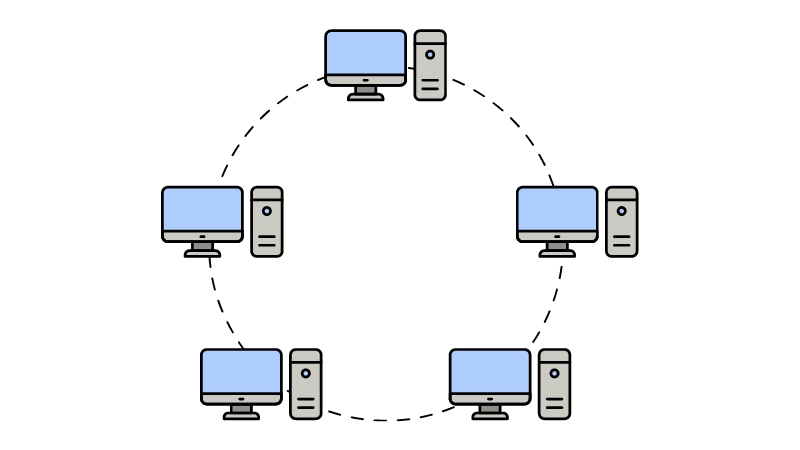
Anillo
Los datos circulan en forma circular entre nodos.
Software de Red

Packet Tracer
Simulador de redes para aprendizaje.
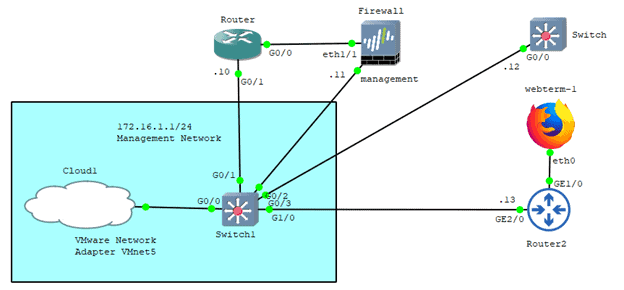
GNS3
Simula redes reales avanzadas.
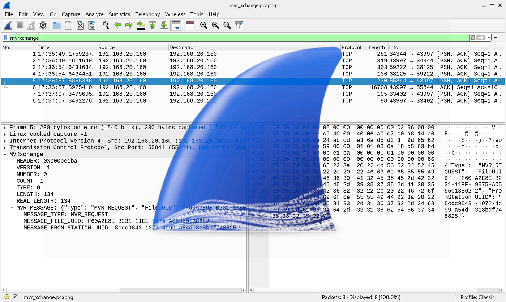
Wireshark
Analiza el tráfico de red en tiempo real.
Dispositivos
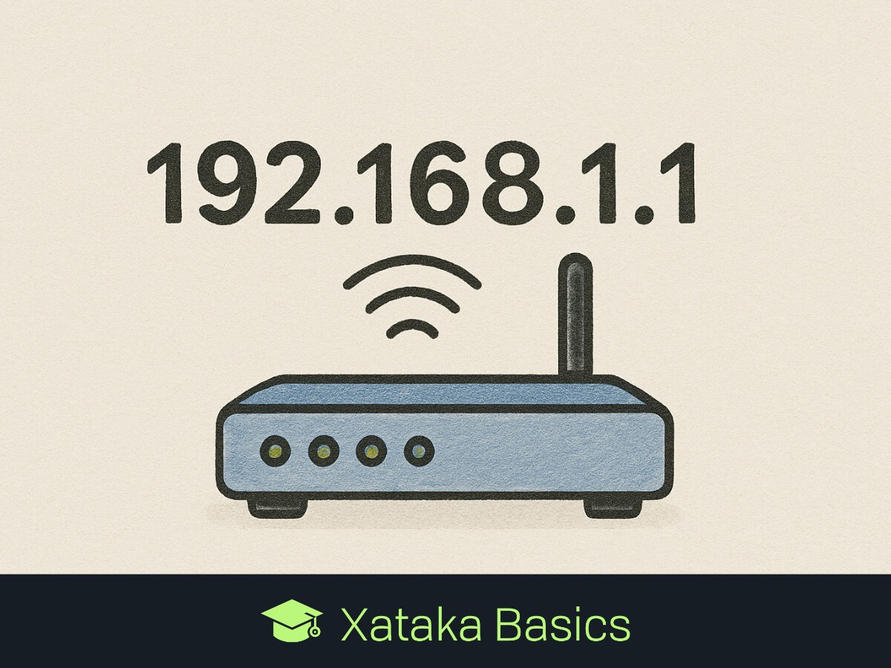
Router
Conecta diferentes redes entre sí.
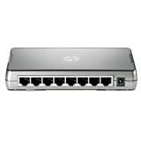
Switch
Conecta múltiples dispositivos en una red local.
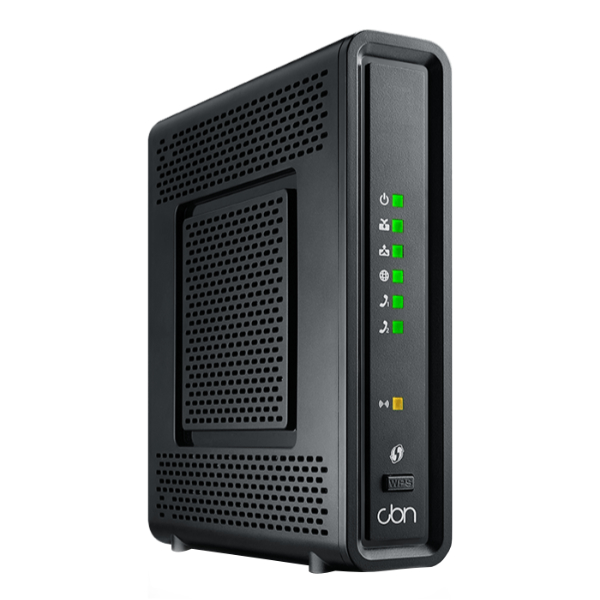
Modem
Permite la conexión a internet.
Cableado UTP, FTP, STP, SFTP
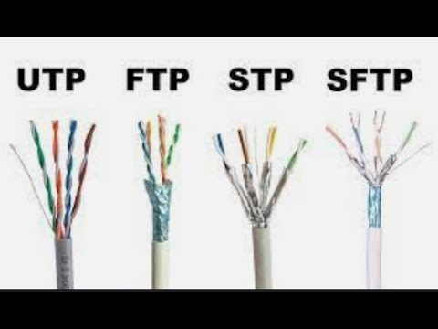
El cableado de par trenzado se utiliza para la transmisión de datos en redes. Se clasifica según su nivel de protección contra interferencias electromagnéticas (EMI).
🔹 UTP
- Definición: Cable sin blindaje adicional.
- Características: Flexible, económico y fácil de instalar.
- Uso: Hogares y oficinas pequeñas.
🔹 FTP
- Definición: Cable con lámina protectora global.
- Características: Mayor protección contra interferencias.
- Uso: Oficinas y entornos con ruido moderado.
🔹 STP
- Definición: Cada par tiene su propio blindaje.
- Características: Reduce interferencias internas.
- Uso: Industrias o lugares con alta interferencia.
🔹 SFTP
- Definición: Doble blindaje (general + individual).
- Características: Máxima protección contra interferencias.
- Uso: Centros de datos, hospitales y alta tecnología.